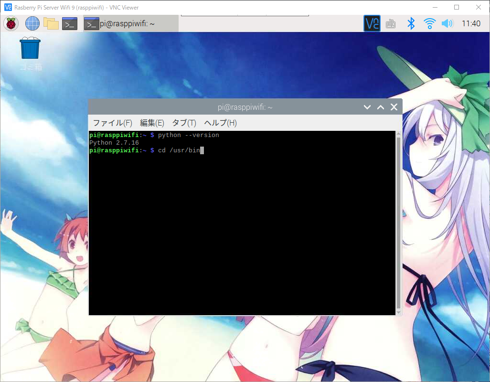
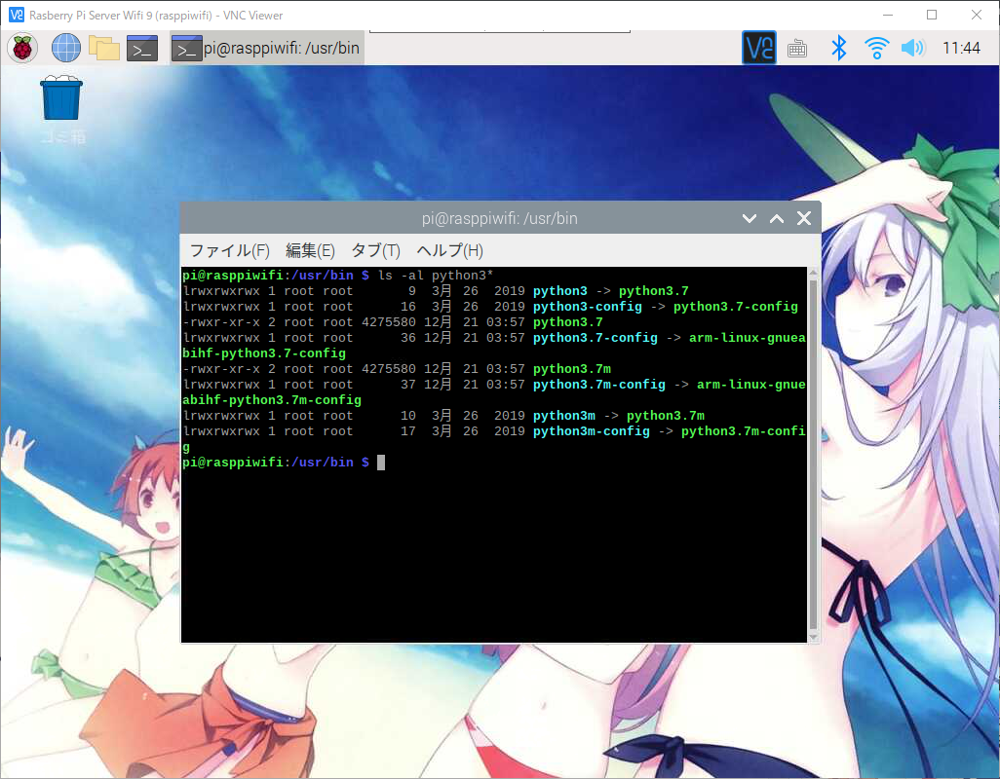
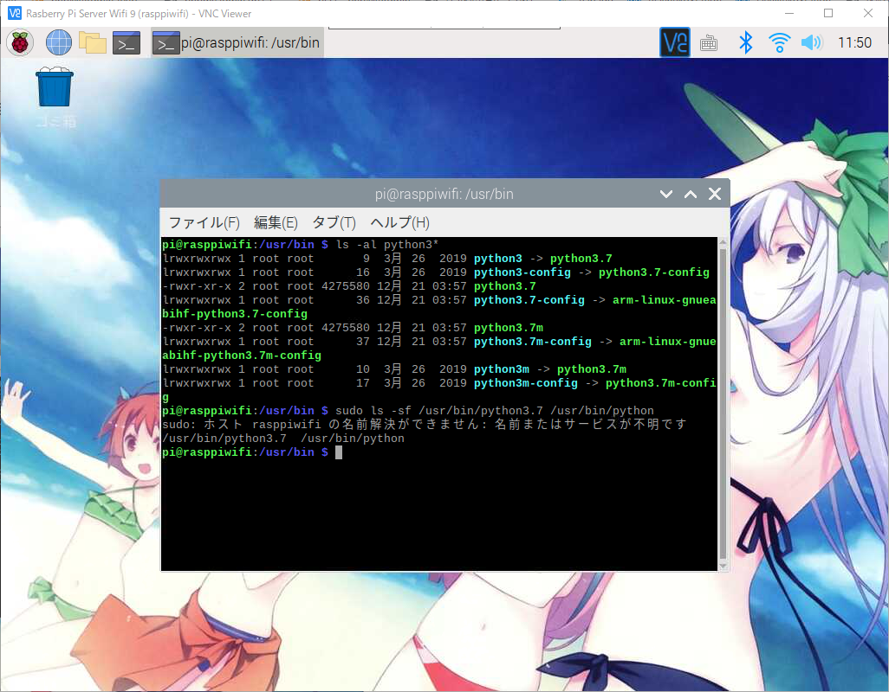

라즈베리파이 파이썬 기본버전을 최신버전으로 변경하기
라즈베리파이 파이썬 기본버전을 최신버전으로 변경하기
안녕하세요.
이번에 소개할 내용은 라즈베리파이를 설치후 파이썬을 설치했습니다만
최신버전을 사용하지 않고 기본버전 2.x버전대를 사용하게 되는것을 알수가 있습니다.
그래서 기본버전대에서 최신버전인 3.x버전으로 변경하는 방법을 소개해 드리도록 하겠습니다.
주의사항
아래의 방법은 꼭 필요하신 분들에게만 추천 합니다.
apt-get에서 최신버전 업데이트를 할경우 여러가지 에러나 문제점이 발생할 가능성이 있습니다.
우선 라즈베리파이를 VNC를 이용해서 접속후 터미널을 실행해 주세요.
아래의 명령어를 입력해서 파이선 버전을 확인 합니다.
1 | $ python --version |
아래와 같이 2.x버전대가 출력되는것을 알수가 있습니다.

아래의 명령어를 입력하시기 바랍니다.
1 | $ cd /usr/bin |

최신버전의 파이썬이 설치가 되어있는지 확인을 위해서 아래의 명령어를 입력해 주세요.
1 | $ ls -al python3* |

설치되어있는 3버전대의 파이썬이 있는것을 확인하실수 있습니다.
이젠 python3을 python으로 변경을 할것입니다.
나는 변경하지 않고 그냥사용하실 분들은 파이썬을 실행하실때 python이 아닌 python3을 입력해서
사용하셔도 되지만 깜빡하고 3을 빼먹는 경우가 있기때문에 재설정을 해주겠습니다.
이때 기존의 파이썬 링크를 3버전대의 링크로 재설정을 하기위해선 심볼릭링크란 명령어를 사용하게 됩니다.
심볼릭링크는 유닉스,리눅스 시스템에서 사용하는것으로 윈도우에서 쇼트컷(바로가기)와 동일한 기능입니다.
아래의 명령어를 콘솔에 입력해 주시기 바랍니다.
1 | $ sudo ls -sf /usr/bin/python3.7 /usr/bin/python |
실행을 하시면 아래와 같이 나오게 됩니다.

그럼 이제 버전이 제대로 설정이 되었는지 확인을 해봐야 합니다.
아래의 명령어를 입력해서 2.x버전대에서 3.x버전대로 변경이 되었는지 확인해 보시면 되겠습니다.